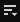
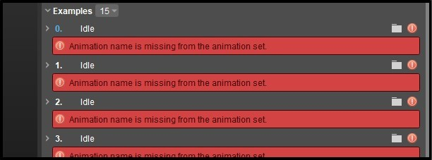

Обзор
В следующем уроке вы узнаете, как использовать пример файла пространства смешивания и добавить в него собственную анимацию.
Предварительные условия
- Знакомство с созданием и назначением пространств смешивания вашему персонажу. См. Урок. Конвейер символов. Создание пространства смешивания..
Персонаж Mixamo со скелетом, сеткой и настроенными следующими анимациями передвижения: падение на холостом ходу, холостой ход, прыжок, ходьба влево, ходьба вправо, бег влево, бег вправо, поворот налево на 90 градусов, поворот направо на 90 градусов, бег, медленный бег назад, ходьба. Персонаж и его анимация должны быть импортированы в ваш проект CRYENGINE.
Дополнительную информацию о создании персонажа Mixamo с нуля см. в нашей пошаговой инструкции. обучающий блог.
- Копия следующего файла примера пространства смешивания:
locomotion.bspace
Загрузка примера файла пространства смешивания
- Перейдите в подпапку, содержащую файл вашего персонажа и его анимацию в каталоге вашего проекта CRYENGINE; это обычно, Активы/Объекты/Персонажи/<ваш персонаж>.
- Создайте папку с названием пространство смешивания в папке вашего персонажа и поместите в нее предоставленный файл примера пространства смешивания.
- В редакторе Sandbox откройте файл Character Tool (Инструменты → Анимация → Character Tool) из главного меню.
На панели «Ресурсы» Character Tool найдите файл .cdf вашего персонажа под папкой Персонажи папку и нажмите double, чтобы открыть ее.
На этом этапе на панели свойств Character Tool вы должны увидеть информацию, связанную с различными вложениями, из которых состоит ваш персонаж.
- Под Анимации на панели «Ресурсы» вы теперь должны увидеть папку с названием пространство для смешивания. Внутри него найдите locomotion.bspace файл, который вы сохранили на шаге 2, и щелкните его, чтобы открыть.
Визуализация пространств смешивания
Чтобы визуализировать пространства смешивания, которые мы создаем в Character Tool, выберите Вид → Предварительный просмотр пространства смешивания вариант из 
Под Примеры на панели «Свойства» вы обнаружите, что в каждом из примеров отображается следующая ошибка, поскольку движок не может найти анимацию-заполнитель.

Ошибка примера
Чтобы это исправить:
Замените каждую анимацию-заполнитель, щелкнув

При назначении анимации обязательно придерживайтесь исходного порядка примеров; тот Простой примеру должна быть назначена анимация простоя, анимация ходьбы должна быть назначена Прогулка пример и так далее.
Сохраните изменения, щелкнув значок в верхней части панели «Свойства».
Ваш файл пространства смешивания теперь успешно настроен. Следующим шагом будет настройка анимации в редакторе Mannequin; увидеть Урок — Конвейер персонажей — Настройка Mannequin для получения дополнительной информации.